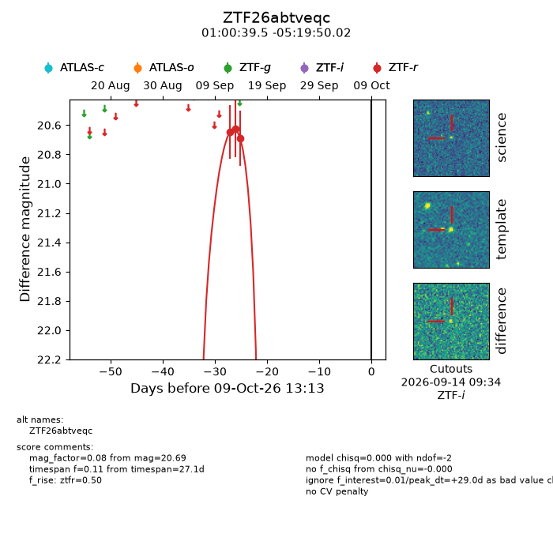
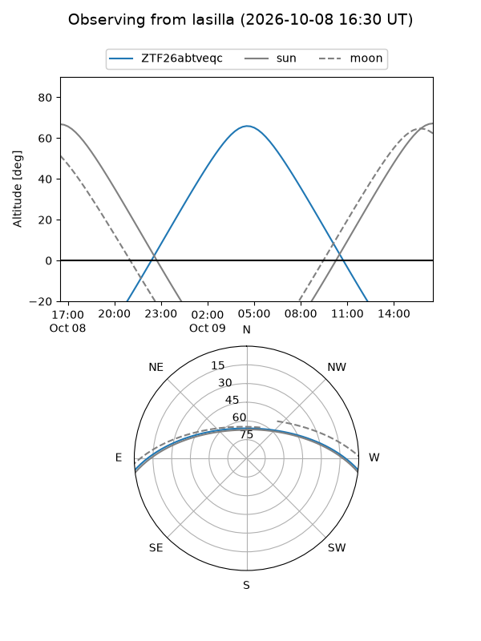
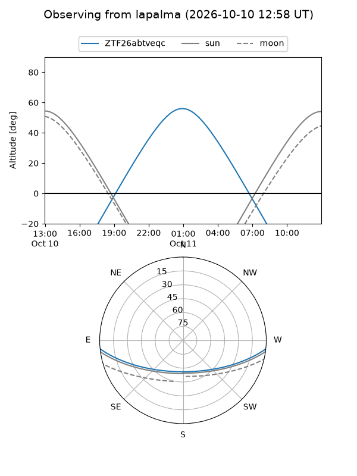
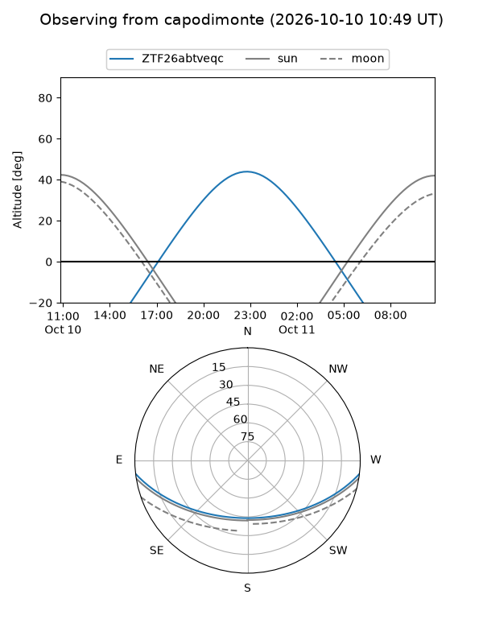
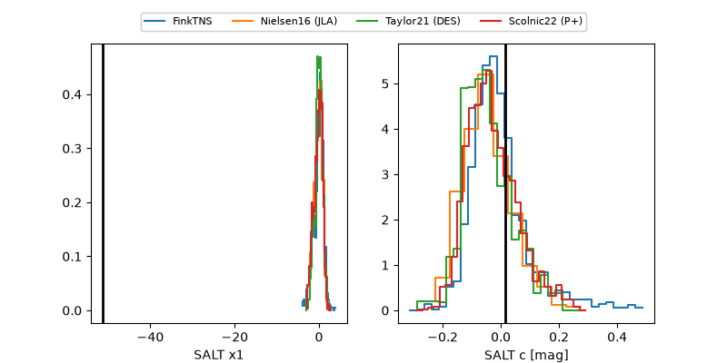

ZTF26abtveqc
Target ZTF26abtveqc at 2026-10-09 13:15
Aliases and brokers:
FINK-ZTF: ztf.fink-portal.org/ZTF26abtveqc
Lasair-ZTF: lasair-ztf.lsst.ac.uk/objects/ZTF26abtveqc
ALeRCE-ZTF: alerce.online/object/ZTF26abtveqc
Direct TNS query: direct search
alt names
ZTF26abtveqc (ztf,fink_ztf)
Coordinates:
equatorial (ra, dec) = 15.1645,-5.33056
equatorial (HMS+DMS) = 01:00:39.49,-05:19:50.02
galactic (l, b) = (129.0933,-68.09194)
Flags:
peak dt: +29.0
Photometry:
last ztfr=20.69
3 ztfr detections
Lightcurve

Visibility



Additional plots
